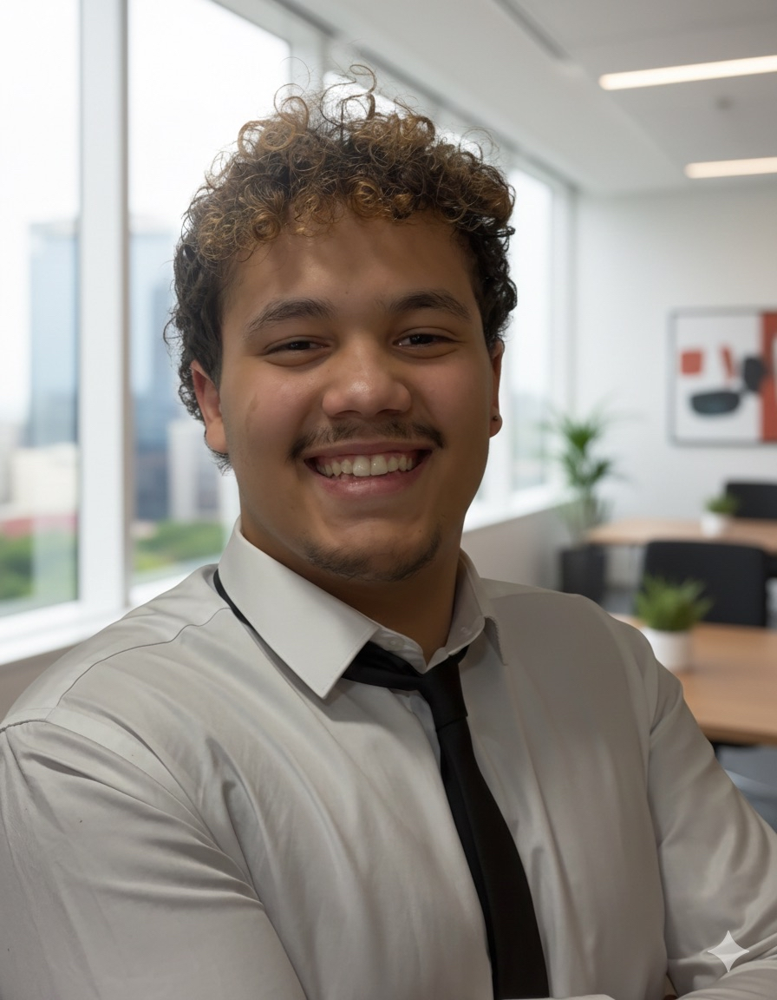
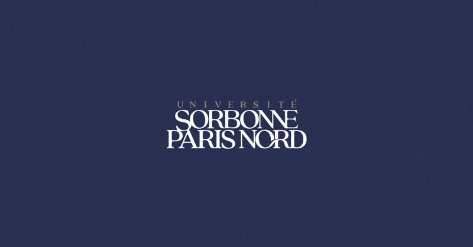
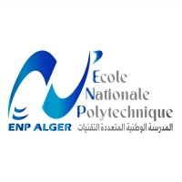
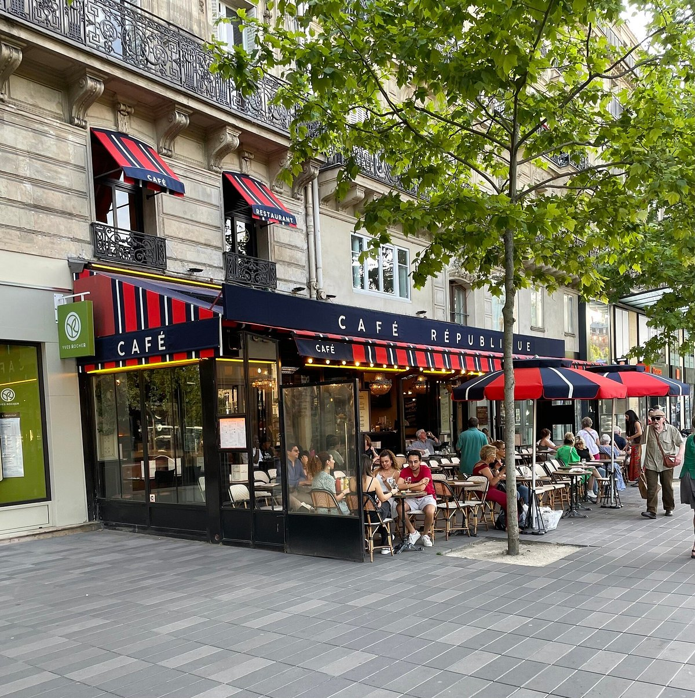
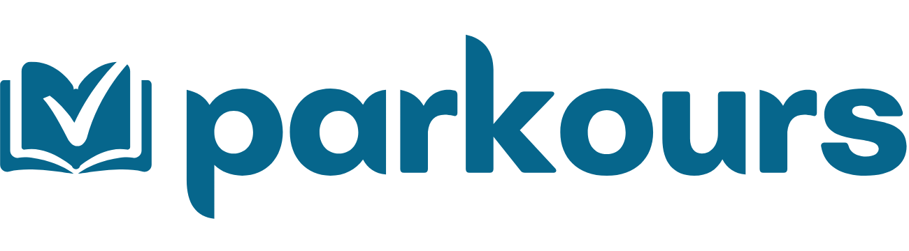
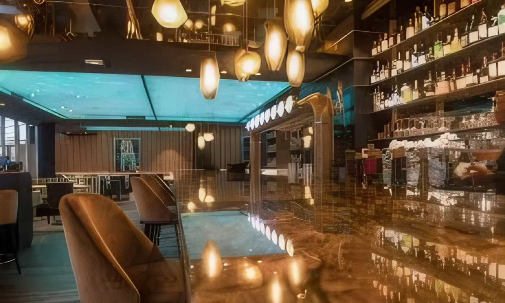
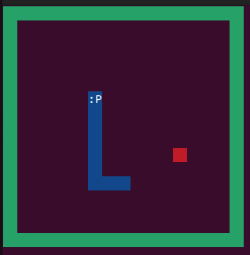
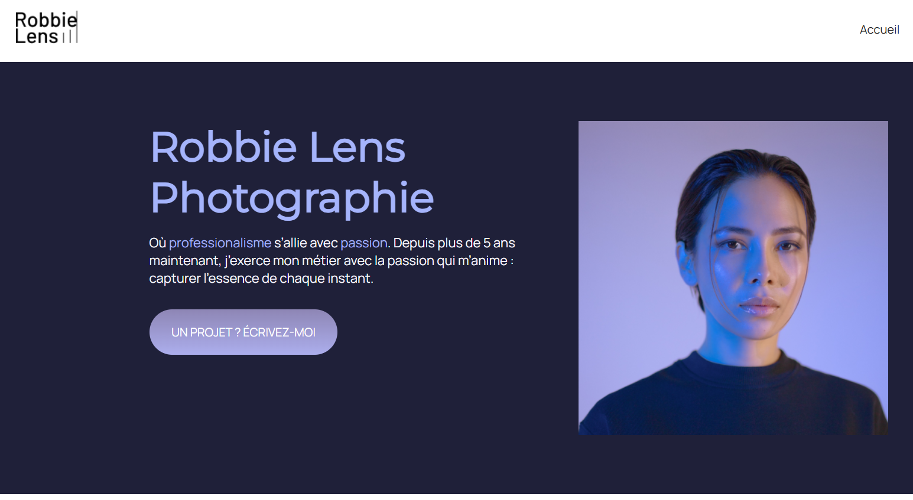

À PROPOS
Bonjour et bienvenue sur mon portfolio. Je m’appelle Abdelkarim Nabil Ferhat, j’ai 21 ans et j'étudie actuellement à l'Université Sorbonne Paris Nord.
Passionné par les mathématiques depuis mon plus jeune âge, je me suis naturellement dirigé vers un baccalauréat en mathématiques que j'ai obtenu avec la mention Très Bien (17,01/20). Ce résultat m’a ouvert les portes de l'institution la plus prestigieuse et sélective d'Algérie : l'École Nationale Polytechnique d'Alger. J’y ai réussi mon année préparatoire avec une moyenne de 15,30/20 en terminant 13ème de ma promotion sur 350 élèves. C’est précisément au cours de cette année que j'ai commencé à aimer l'informatique.
J’ai donc décidé de poursuivre mon parcours en double licence Mathématiques et Informatique à l’Université Sorbonne Paris Nord, où j’ai pu approfondir mes connaissances théoriques et découvrir de nouvelles technologies. Ce cursus me permet de concilier la rigueur de l'analyse et la puissance de l'outil informatique à travers plusieurs projets concrets, notamment en Machine Learning et en développement Python.
Plus tard, j’envisage de devenir Data Scientist. Pour cela, je souhaite intégrer un Master orienté IA, Machine Learning et Data Science afin de poursuivre mes études par deux années d'alternance.
Je serai très heureux de pouvoir mettre mon esprit d'analyse et mes compétences au service de vos futurs projets. Si vous souhaitez en savoir plus sur moi, n’hésitez pas à explorer ce site. Bonne lecture et à bientôt.

Parcours Académique
Master ISD 1 sciences des données
Université Paris-Saclay | CFA Numia

Double Licence Mathématiques et Informatique
Université Sorbonne Paris Nord | Major de Promo (17,69/20)

Classe Préparatoire CPGE (S.I)
École Nationale Polytechnique - Alger | Admis avec 15,30/20

Expériences Professionnelles
Chef de Rang
Café République | Paris
• Accueil, conseil sur les vins et gestion complète du service.
• Prise de commandes, encaissements et coordination d'équipe.
• Mise en place, dressage des tables et entretien de la salle.

Étudiant Tuteur (Maths & Logique)
Parkours | Paris
• Soutien scientifique et pédagogie pour lycéens et étudiants.
• Suivi de l'assiduité et rédaction de rapports de progrès.

Serveur
Restaurant Jean | Antony
• Service à l'assiette et gestion de la relation client en milieu dynamique.
• Coordination avec la cuisine pour un service fluide.

Projets Académiques & Réalisations

Prédiction de Marché (EA FC 26)

Messagerie FREESCORD

Optimisation Matricielle

Jeu SNAKE Optimisé

Portfolio Professionnel
Compétences & Outils
Programmation
- Python, C
- SQL (PostgreSQL)
- Java, OCaml
Data Science & ML
- Scikit-learn
- Pandas, NumPy
- Matplotlib
Versionning & Outils
- Bash - Linux
- Git / GitHub / GitLab
- VS Code, Photoshop
- HTML & CSS
Langues
- Français - C2 (DALF)
- Anglais - B2
- Arabe - C2